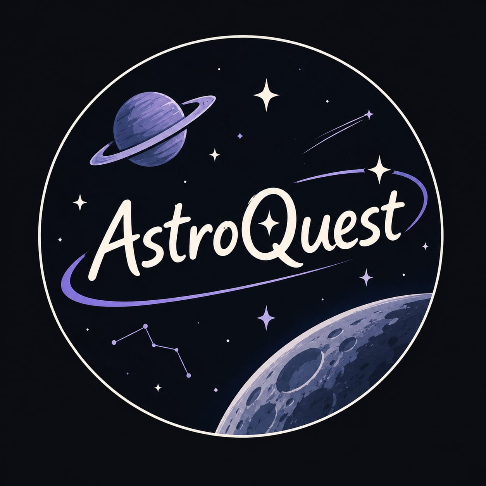

CANDIDATE SITE
01
CHILE · SOUTH AMERICA
Atacama Desert
An extremely dry environment of interest for studying arid conditions and testing selected instruments.

AstroQuest Start Exploring ↗EARTH ANALOG EXPLORER
Discover places on Earth that can help scientists study lunar and Martian environments, test technologies, and prepare for future space missions.
THE EXPLORATION BEGINS HERE
Every environment tells a story. Explore candidate locations and discover what scientific data can tell us about them.
CHILE · SOUTH AMERICA
An extremely dry environment of interest for studying arid conditions and testing selected instruments.
DEVON ISLAND · CANADA
An impact crater in a polar desert environment that has been studied as an analogue for planetary exploration.
ICELAND · EUROPE
Selected volcanic landscapes can help researchers investigate rocky terrain and field-testing conditions.
Prototype locations for exploration only. Scientific properties, mission relevance, and source data must be verified before final use.
BEYOND THE SURFACE
Earth is not the Moon or Mars. But careful comparisons can help us understand which environments are useful for particular research and testing goals.
Explore candidate sites ↗OUR MISSION
SPACE TWIN is a concept for exploring terrestrial analogue environments through scientific data, transparent comparisons, and accessible explanations.
Scientific claims and datasets will be linked to their original sources after verification.